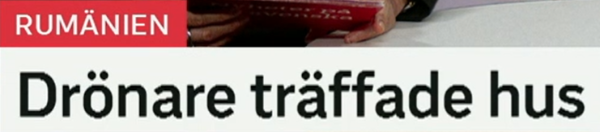
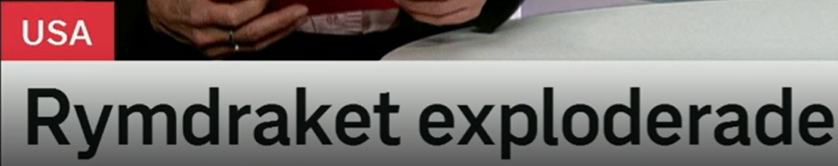
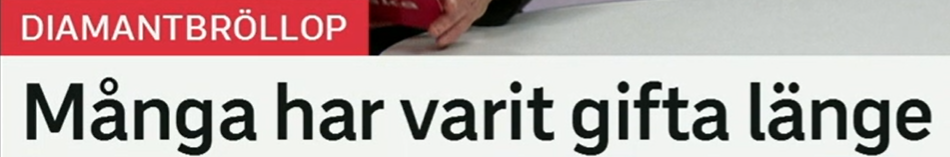
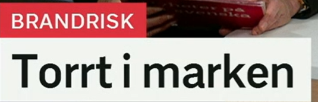

Uppehållstillstånd tas bort
居留许可被取消。
ett uppehållstillstånd 居留许可，由 uppehåll 停留/居留 + tillstånd 许可组成。
相关词：arbetstillstånd 工作许可，visum 签证，medborgarskap 公民身份，asyl 庇护。
Han ansöker om uppehållstillstånd. 他申请居留许可。
来自 ta bort，移除、取消、删掉。tas bort = 被移除/被取消。
近义词：avskaffas 被废除，dras in 被撤销，slopas 被取消，raderas 被删除。
Regeln tas bort nästa år. 这条规则明年被取消。
misstänkt 可疑的/嫌疑人；kriminell 犯罪的/罪犯。搭配：misstänkt för brott 涉嫌犯罪。
Mannen är misstänkt för grovt brott. 该男子涉嫌严重犯罪。
政策标题句型
X tas bort = X 被取消/移除。新闻里常见：kravet tas bort 要求被取消，stödet tas bort 补贴被取消。

Drönare träffade hus
无人机击中房屋。
en drönare 无人机。复合词：drönarattack 无人机袭击，drönarbild 无人机画面，drönarflygning 无人机飞行。
相关词：obemannat flyg 无人飞行器，flygfarkost 飞行器，spaningsdrönare 侦察无人机。
En drönare flög nära gränsen. 一架无人机飞近边境。
原形 träffa，可以是“见面”，也可以是“击中、命中”。这里是击中。
近义词：träffa målet 命中目标，slå ner i 落入/击中，skada 造成损害，drabba 影响/袭击。
Raketen träffade en byggnad. 火箭击中一栋建筑。
ett hus 房子；复数也常是 hus。相关词：byggnad 建筑，bostad 住房，hem 家。
Flera hus skadades i explosionen. 多栋房屋在爆炸中受损。
事故标题句型
X träffade Y = X 击中 Y。注意 träffa 也有“见面”的意思，语境会帮你判断。

Rymdraket exploderade
太空火箭爆炸了。
rymden 太空 + raket 火箭。相关词：rymdfart 航天，rymdstation 空间站，uppskjutning 发射。
Rymdraketen lyfte på morgonen. 太空火箭早上升空。
原形 explodera，爆炸。名词 explosion 爆炸。
近义表达：sprängdes 被炸毁/爆炸，brann upp 烧毁，kraschade 坠毁/崩溃，gick sönder 坏掉。
Motorn exploderade kort efter starten. 发动机在启动后不久爆炸。
美国。所有格常写 USA:s，如 USA:s rymdprogram 美国航天计划。
USA:s rymdprogram får mer pengar. 美国航天计划获得更多资金。
科技事故词
explodera 偏“爆炸”；krascha 偏“坠毁/系统崩溃”；gå sönder 是普通的“坏了”。

Många har varit gifta länge
很多人已经结婚很久了。
钻石婚，通常指结婚 60 周年。bröllop 是婚礼；giftermål 是结婚/婚姻缔结。
相关词：bröllopsdag 结婚纪念日，äktenskap 婚姻，gifta par 已婚夫妻。
Paret firar diamantbröllop i år. 这对夫妻今年庆祝钻石婚。
vara gift 已婚；har varit gifta 表示“已经结婚/处于婚姻状态一段时间”。
相关表达：vara gift med 与……结婚，gifta sig 结婚，leva tillsammans 一起生活。
De har varit gifta i 40 år. 他们已经结婚 40 年。
长时间、很久。搭配：vänta länge 等很久，bo länge 住很久，inte längre 不再。
Hon har bott länge i Malmö. 她在马尔默住了很久。
持续状态
har varit + 形容词/状态 + länge = 已经处于某状态很久。比如 har varit sjuk länge 病了很久。

Torrt i marken
地面/土壤很干燥。
torr 干的；中性 torrt，复数/定形 torra。天气和火灾风险报道中很常见。
近义词：uttorkad 干涸的，torkad 干燥的，regnfattig 少雨的。反义：våt 湿的，fuktig 潮湿的。
Det är torrt i skogen. 森林里很干燥。
来自 en mark，地面、土地、土壤。相关词：jord 土，skog 森林，gräs 草地。
Regnet behövs för marken. 土地需要降雨。
brand 火灾 + risk 风险。相关词：skogsbrand 森林火灾，eldningsförbud 禁止生火，torka 干旱。
高频搭配：hög brandrisk 高火灾风险，stor risk för brand 火灾风险大，varning för brandrisk 火灾风险警告。
Det råder hög brandrisk i området. 该地区火灾风险很高。
天气/环境标题
Torrt i marken 省略了 det är：Det är torrt i marken. 类似可说 blött på vägarna 路面湿滑。
复习表：重点词 + 近义词 + 高频用法
| 关键词 | 近义/相关词 | 高频搭配 |
|---|---|---|
| tas bort | avskaffas, dras in, slopas, raderas | regeln tas bort, tillståndet dras in, kravet slopas |
| träffa | träffa målet, slå ner i, drabba, skada | drönare träffade hus, raketen träffade byggnaden |
| explodera | sprängas, krascha, brinna upp, gå sönder | raketen exploderade, motorn exploderade |
| gift | gifta sig, äktenskap, gifta par, bröllop | vara gift med, har varit gifta i 40 år |
| torr | uttorkad, regnfattig, fuktig, våt | torrt i marken, torrt i skogen, torra gräsmarker |
| brandrisk | skogsbrand, eldningsförbud, torka, varning | hög brandrisk, varning för brandrisk, risk för brand |
练习 1
把“这条规则被取消”译成瑞典语。提示：Regeln tas bort.
练习 2
说“火箭爆炸了”。提示：Raketen exploderade.
练习 3
用 har varit gifta 写“他们已经结婚 30 年”。提示：De har varit gifta i 30 år.
练习 4
把“森林里很干燥”译成瑞典语。提示：Det är torrt i skogen.